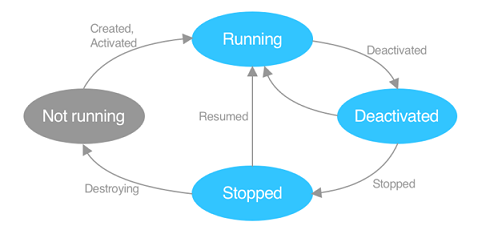

.NET Framework: Single Platform Windows, .NET Core: Cross-Platform Desktop, Mono: Mobile Crossplatform. Seit .NET 5 wird vereinheitlicht: Reduktion der Runtimes, einheitliche Base Class Library, Tooling, Naming. .NET Standard beinhaltet die Gemeinsamkeiten der verschiedenen Base Class Libraries. Faustregeln: .NET Standard 2.0 für .NET Framework, .NET Standard 2.1 für Mono/Xamarin, .NET 6.0 aufwärts für alles andere (Desktop sowie Mobile).
NuGet:
Paketmanager im .NET Umfeld. Open Source, öffentlich auf nuget.org oder
private Hosts, .nupkg Dateien sind ZIP Files.
XAML:
XML-basierte Beschreibungssprache für grafische Oberflächen.
Hierarchisch Strukturiert, trennt Layout von Code. Verwendet
verschiedene "Dialekte" für verschiedene UI Frameworks (WPF, UWP, WinUI, Xamarin, Maui, ...). Standardisierung wurde gestoppt.
| Ordner/File | Was |
|---|---|
Platforms/ |
Plattform-spezifischer (Startup-)Code |
Resources/ |
Für alle Plattformen verwendet |
App.xaml |
Einstiegspunkt in MAUI-Applikation |
AppShell.xaml |
Definition der visuellen HIerarchie (Shell) |
MainPage.xaml |
Inhalt des ersten Fensters der App |
MauiProgram.cs |
Bootstrapping der MAUI-Applikation (Builder) |
Definieren Application Title, ID, GUID und Versionierung (Version und DisplayVersion).
xxxxxxxxxx<Application xmlns="http://schemas.microsoft.com/dotnet/2021/maui" x:Class="Vorlesung_08.App"></Application> <!-- verbindet XAML und C# -->xxxxxxxxxxnamespace Vorlesung_08;public partial class App : Application{ public App() { InitializeComponent(); MainPage = new AppShell(); }}Build Action in Visual Studio Properties Fenster ist für XAML Files als "MauiXaml" festgelegt.
Common Language Runtime ist die Ausführende Instanz, MSIL Microsoft Intermediate Language (Assembler-Like) als Zwischensprache.
Wichtige Objekte:
xxxxxxxxxx// Propertiespublic string LastName{ get { return _lastName; } set { _lastName = value; }}// Delegatesdelegate int Calculation(int a, int b);public delegate void Action<T>(T t);public delegate TResult Func<T, U, TResult>(T t, U u);// Eventspublic event EventHandler<string> SomeThingChanged;SomeThingChanged?.Invoke(this, newValue);// LambdasFunc<int, int> func1 = delegate (int x) { return x + 1; };Func<int, int> func3 = x => x + 1;Func<int, int> func6 = (int x) => { return x + 1; };Action func8 = () => Console.WriteLine();XAML Grundlagen : XML basiert, nur in Microsoft (.NET) UI-Framekworks verwendet zur Trennung von Layout und Code. Hierarchisch strukturiert. Vorteile: leichtgewichtig, kurz und gut lesbar, Grafischer Designer inkl. Vorschau, Layout durch spezifische Tools erstellbar. Control Libraries: spezifische SDK Bibliothek für Controls, Layouts, Buttons etc.


Ansicht kann in Visual Studio umgeschaltet werden zwischen Visual Tree (vollständiger Baum der visuell dargestellt wird, enthält sämtliche Knoten) und Logical Tree (Vereinfachung, beinhaltet nur selber definierte Knoten). Namespaces können/müssen im Application Knoten definiert werden:
xxxxxxxxxx<Application xmlns="http://schemas.microsoft.com/dotnet/2021/maui" xmlns:x="http://schemas.microsoft.com/winfx/2009/xaml" xmlns:local="clr-namespace:Vorlesung_08" x:Class="Vorlesung_08.App">
xmlns
ohne Name ist der Standard Namespace. Üblich: Standard = MAUI Control
Library
xmlns:x für XAML-spezifisches
xmlns:local für eigenes Assembly
x:Class ="Vorlesung_09.App" definiert zugehörige Code-Behind Klasse.
Named Elements: x:Name="myElement"Attribut erstellt ein Property in der generierten Klasse, ermöglicht
Zugriff aus Code-Behind. Event Handler:
Methode aus Code Behind kann in XML registriert werden. Parameter object sender
ist das auslösende Control. Argumente enthalten Details zum Event
(abgeleitet von EventArgs). Bessere Alternativen via VewModel..
xxxxxxxxxx<Button Clicked="Button_OnClicked" Text="Click Me!" />xxxxxxxxxxprivate void Button_OnClicked(object sender, EventArgs args) { /* do something */ }XAML Syntaxen
xxxxxxxxxx<Label Text="Attribute Syntax" TextColor="Red" />
<Label Text="Property Element Syntax"> <Label.TextColor> <Color>Red</Color> </Label.TextColor></Label>Content Properties: Spezielle Eigenschaft kann direkt als Inhalt des XML-Tags geschrieben werden, kann aufwändige Property Element Syntax vereinfachen. Besser Lesbar bei Parent/Child Beziehungen.
xxxxxxxxxx<Label Text="Inhalt" /> oder <Label>Inhalt</Label><VerticalStackLayout> <VerticalStackLayout.Children> <!-- Children ist Content Property von VerticalStackLayout: --> <Label>Inhalt</Label> </VerticalStackLayout.Children> <!-- kann weggelassen werden --></VerticalStackLayout>
Attached Properties:
Setzen einer Eigenschaft auf einem Element, welche zu einem anderen
(meist Eltern-) Element gehört. Pendant in Android die layout_ Attribute.
xxxxxxxxxx<Grid> ... <Label Grid.Row="0" x:Name="Test"></Label></Grid>Type Converters: Werden verwendet, um im XAML aus meist String-Eingaben verschiedene komplexere Elemente zu parsen (Location, Brush, Color, etc.). Viele Converters sind im .NET Community Toolkit enthalten.
xxxxxxxxxx<Label Text="{AppThemeBinding Dark='Theme: Dark' Light='Theme: Light' Default='Theme: ???'}" />xxxxxxxxxxpublic class IntToBoolConverter : IValueConverter{ public object Convert (object value, Type targetType, object parameter, CultureInfo culture) { return (int)value != 0; } public object ConvertBack(object value, Type TargetType, object parameter, CultreInfo culture) { return (bool)value ? 1 : 0; }}xxxxxxxxxx<Button Text="Search" IsEnabled="{Binding Source={x:Reference entry1}, Path=Text.Length, Converter={StaticResource intToBool}}" /><!-- Ref entry1 = zu prüfendes Textfeld, Text.Length = zu konvertierender Wert -->
Markup Extensions
erlauben Logik in XAML, häufig für Styling oder Data Binding verwendet.
Auch eigene Extensions möglich. Aufzurufende Funktion innerhalb { }
xxxxxxxxxx<Label Text="Mein Text" FontFamily="{x:Null}" /><Label Text="{local:LocationExtension Lat=10,Long=20}" />xxxxxxxxxxpublic class LocationExtension : IMarkupExtension<string>{ public string Latitude { get; set; } public string Longitude { get; set; } public string ProvideValue(IServiceProvider sp) => Latitude + " / " + Longitude; object IMarkupExtension.ProvideValue(IServiceProvider sp) => ProvideValue(sp);}Basisklassen bieten schrittweise weitere Funktionalität an alle von ihnen ableitenden Klassen an.

Grundlegender Aufbau einer Seite (--> enthält 1 oder mehrere von)
Application: MainPage definiert ersten angezeigten Screen, erzeugt und verwaltet Fenster. Verarbeitung von Lifecycle Events in überschreibbaren Methoden (für alle Fenster). Zentrale Verwaltung von app-weiten XAML Ressourcen.
Window:
Definiert ein einzelnes Fenster inkl. Lifecycle Methoden, zum
Überschreiben ist eine eigene Ableitung von Window nötig. Weitere
Fenster werden via Application erzeugt: Application.Current.OpenWindow(window); Events: Created, Activated, Deactivated, Stopped, Resumed, Destroying
Lifecycle: Events können im Window oder reduziert in Application verarbeitet werden.

Grau: Nicht im Memory geladen.

Elemente zur Strukturierung und Gestaltung von Screens. Verschachtelung üblich. Content Page (leer), Flyout Page (Benötigt NavigationPage für korrekte Darstellung. Seitlich "einfliegende" Content Page), Navigation Page (Titel Bar mit Back Button), Tabbed Page (Vereint mehrere ContentPages mittels Tab Navigation)
Modal: Vordefinierte Abfolge von Fenstern, kann nicht einfach
geschlossen werden
Modeless: Navigation Stack, User kann jederzeit zurück navigieren. NavigationPage benötigt.
Varianten: Application.MainPage, Austausch der angezeigten Page (nur sehr einfache Apps). NavigableElement.Navigation (s.oben, modeless oder modal), Shell (Navigation mittels URIs)
Sind Container für Kind-Elemente => Composite Design Pattern.
Verschachtelung möglich (analog Android).
Zur Ausrichtung von Kind-Elementen im Layout wird HorizontalOptions und VerticalOptionsverwendet. Varianten sind Start(links/oben), Center(zentriert), End (rechts/unten), Fill
(Platz füllen, Standard). Layouts berücksichtigen Kultureinstellungen
wie Left-to-Right/Right-To-Left Text.
StackLayout: Horizontal- oder VerticalStackLayout möglich. "StackLayout" ist veraltet.
FlexLayout: Wie Stack aber mit Wrapping und mehr Gestaltungsmöglichkeiten. Direction="[Row|Column]", Wrap="Wrap", JustifyContent, AlignItems zur Verteilung der Items auf beiden Achsen.
Grid: Flexibles, verbreitetes Layout mit Zeilen und Spalten. Sehr mächtig.
Grössen: 1*, 2*, 3* = relative Einheiten. einmalig * vergeben für "brauche restlich verfügbaren Platz". auto wie Android wrap_content
(Achtung Overhead, Koordination durch Elternlayout). Mehrere Elemente in
der selben Zelle werden auf der z-Axis gestapelt (=> gut für
Background Image). Weitere Werte sind Row/ColumnSpacing(Abstand), Row/ColumnSpan(Verbundene Zellen).
AbsoluteLayout: Gut für Overlays, Karten mit Controls etc. Absolute (selten) oder
proportionale Werte (in Prozent vom Elternelement, zw. 0.0-1.0).
Wertetypen sind Kombinierbar.
Auch Controls oder Widgets. Sind Elemente, die für den Benutzer "interagierbar" sind. MAUI bildet diese via Handlers auf Plattform-native Views ab.
xxxxxxxxxx<Label Text="{AppThemeBinding Dark='Theme: Dark' Light='Theme: Light' Default='Theme: ???'}" />| Typ | Beispiele |
|---|---|
| Darstellung | Label, Image, Border, Frame, ScrollView, ... |
| Eingaben | Entry, CheckBox, Slider, Switch, ... |
| Aktionen | Button, ImageButton, SearchBar, ... |
| Aktivitätsanzeige | ActivityIndicator und ProgressBar |
| Collections (W11) | Picker, ListView, CarouselView, TableView, ... |
Grössenangaben:
in MAUI immer Device-Independent Units. Relative Werte ohne Einheit,
Umrechnung auf plattformspezifische Werte bei Ausführung. Sind nur Wünsche
an die Rendering-Engine (Minimum- / MaximumHeightRequest). Ohne
Grössenangabe wird View "so gross wie nötig" bzw. wie in
Android wrap_content dargestellt.
Margin und Padding:
Pages haben Padding, Layouts und Views Margin und Padding. Mögliche
Werte sind all / horizontal,vertical / l,t,r,b
Bilder: Im Ordner Resources/Images/, Types jpg, png oder svg
(gut skalierend und klein, werden zu png umgewandelt). XAML: <Image Source="cat.jpg"
Aspect="AspectFit|AspectFill|Fill|Center" />. GIFs inkl. Animation möglich, Internet-Grafik, Byte-Array, Bilder aus
DLLs/Assemblies.
App Icon und Splash Screen
ebenfalls in Resources Ordner. Wird für alle Plattformen automatisch
generiert. Zusätzliche Parameter auch in .csproj möglich.
Schriften: Im Ordner Resources/Fonts/, als ttf oder otf Files. BuildAction MauiFont hinterlegt. Registrieren beim Start der App im MauiProgram.cs: builder.ConfigureFonts(), Verwenden als FontFamily
Attribut im XML. Font Icons auch möglich als Alternative zu Bildern
(FontImageSource Objekt).
xxxxxxxxxx<Image> <Image.Source> <!--  steht für \uf6e2 --> <FontImageSource FontFamily="FontAwesomeSolid" Glyph="" Color="White" Size="50"/> </Image.Source></Image>
Farben: Color (Farben) oder Brush (SolidColorBrush, LinearGradientBrush, RadialGradientBrush). Color wird automatisch in SolidColorBrush umgewandelt.
xxxxxxxxxx<Label Text="Linear Gradient Brush"> <Label.Background> <LinearGradientBrush StartPoint="0,0" EndPoint="0,1"> <GradientStop Offset="0.0" Color="#Color1" /> <GradientStop Offset="0.5" Color="#Color2" /> <GradientStop Offset="1.0" Color="#Color1" /> </LinearGradientBrush> </Label.Background></Label>
Rahmen und Schatten: Border (moderner) oder Frame Element um das entsprechende Control. Shadow View für Schatten, auf jedes VisualElement anwendbar.
xxxxxxxxxx<Border StrokeThickness="4" StrokeShape="RoundRectangle 20,20,20,20" Background="#color"> <Label Text="MGE" TextColor="Black" Padding="60,8" /> <Border.Shadow><Shadow Brush="White" Offset="0.0" ... /></Border.Shadow></Border>Animationen: Alle VisualElements unterstützen Fading, Scale, Rotate, Translate. Named Element für Zugriff aus Code Behind.
xxxxxxxxxxawait Task.WhenAll // WhenAll -> Parallele Ausführung aller Transformationen( Ghost.TranslateTo(Ghost.X + 100, Ghost.Y + 100, 750), // 750 sind immer ms Ghost.RotateTo(360, 750), Ghost.ScaleTo(1.5, 750), Ghost.FadeTo(0.7,750) // Easing-Funktion angeben auch möglich: Standard ist Linear)Kleinere Plattformspezifische Anpassungen können mit zwei Markup Extensions OnPlatform und OnIdiom umgesetzt werden. Wichtig: immer Default-Wert setzen.
xxxxxxxxxx<Label Text="{OnPlatform '???', Android='Android', WinUI='Windows'}" /> <!-- ??? = Default Wert --><Label Text="{OnIdiom '???', Phonne='Mobile Phone', Desktop='Desktop'}" />
Jegliche Objekte, die in XAML definiert werden können, besitzen
eindeutige ID x:Key
. Werden im Resource Dictionary abgespeichert. Jedes Visual Element in
MAUI hat dazu ein Resources
Property für lokale Resources. Normalerweise auf Pages, Applikationsweit
auch auf Application Klasse.
xxxxxxxxxx<ContentPage> <ContentPage.Resources> <SolidColorBrush x:Key="OstBrush" Color="#6e1c50" /> </ContentPage.Resources></ContentPage>
<!-- Verwendung als Property Element --> <StaticResource Key="OstBrush"/><!-- Verwendung als Markup Extension --> <Label Background="{StaticResource (Key=)OstBrush}"
In C# Code Behind: var brush = Resources["OstBrush"] as Brush; Suchreihenfolge
vom aktuellen Element im Visual Tree nach oben. Bricht beim ersten
Treffer ab. Nicht gefunden: in XAML passiert nichts, C# wirft
Exception.
Ressourcen können statisch (einmalig beim Kompilieren aufgelöst) oder dynamisch (Auswertung bei Ausführung) sein.
Eigenständige Resource Dictionaries als XAML Files möglich, Code Behind
ist optional. Können in andere Dictionaries merged werden.
Verwendungsreihenfolge: lokale Resource, letzter Merge, früherer
Merge.
xxxxxxxxxx<ContentPage xmlns:s="clr-namespace:System;Assembly=System.Runtime"> <ContentPage.Resources> <ResourceDictionary> <s:Double x:Key="VerticalMargin">2</s:Double>/> <!-- Bevorzugt bei Konflikten --> <ResourceDictionary.MergedDictionaries> <ResourceDictionary Sopurce="MyDict.xaml" /> <!-- Resource Dictionary --> </ResourceDictionary.MergedDictionaries> </ResourceDictionary> </ContentPage.Resources></ContentPage>
Basistypen
können auch in XAML als Ressourcen definiert werden. Namespace System.Runtime einbinden zur Verwendung.
xxxxxxxxxx<ContentPage xmlns:s="clr-namespace:System;assembly=System.Runtime"> <ContentPage.Resources> <s:Double x:Key="VerticalMargin">2</s:Double> <s:Double x:Key="HorizontalMargin">5</s:Double>
Zugriff auf statische Werte in C# Code: x:Static -> Keine XAML Resource.
xxxxxxxxxx<ContentPage xmlns:local="clr-namespace:Resources.Example"> <Label Text="Verwendung von x:Static" Background="{x:Static local:MyRes.OstBrush}" /></ContentPage>
Styles gruppieren mehrere Resourcen in einem Element, damit pro Control
nur noch eine Zuweisung gemacht werden muss: <Button Style="{StaticResource MyButtonStyle}" />. XAML Style Objekt kennt Attribut TargetType
(Typ des Controls). Expliziter Style mit Key muss zugewiesen werden,
impliziter Style ohne Key gilt für alle Controls des Typs. Kombination
mit inline Styles und Vererbung ist möglich. Komplexe Werte mit Property
Element Syntax möglich.
xxxxxxxxxx<ContentPage.Resources> <Style x:Key="BrushButton" TargetType="Button"> <!-- x:Key macht Style Explizit --> <Setter Property="Background"> <Setter.Value> <LinearGradientBrush StartPoint="0,0" EndPoint="0,1"> <GradientStop Offset="0" Color="Red" /> <GradientStop Offset="0.5" Color="Yellow" /> <GradientStop Offset="1" Color="Red" /> </LinearGradientBrush> </Setter.Value> </Setter> </Style></ContentPage.Resources><Button Style="{StaticResource BrushButton}" Text="Brush" />
Muss selbst implementiert werden. Erstellen von verschiedenen Resource
Dictionaries, die in die bestehenden Resources gemerged werden.
Dynamische einbindung nötig. Kann OS-Einstellungen berücksichtigen mit Application.Current.RequestedTheme und Application.Current.RequestedThemeChanged .
xxxxxxxxxxprivate void DarkTheme_OnClicked(object s, EventArgs e) => ActivateTheme<DarkTheme>(); // und für LightTheme..private void ActivateTheme<TTheme>() where TTheme : ResourceDictionary, new(){ var mergedDictionaries = Resources.MergedDictionaries; if (mergedDictionaries == null) return; mergedDictionaries.Clear(); mergedDictionaries.Add(new TTheme());}Abfragen der Betriebssystem-Präferenz:
xxxxxxxxxxprivate void LoadThemeBasedOnOperatingSystem(){ var activeTheme = Application.Current.RequestedTheme; // OS Einstellung auslesen var isLightThemeActive = activeTheme == AppTheme.Light; if (isLightThemeActive) ActivateTheme<LightTheme>(); else ActivateTheme<DarkTheme>();}
Noch einfacher für kleine Apps mit Markup Extension AppThemeBinding:
xxxxxxxxxx<Label Text="{AppThemeBinding Dark='Theme: Dark' Light='Theme: Light' Default='Theme: ???'}" />Verknüpfung von Controller und View ist normalerweise statisch und dadurch schwierig testbar. Mit Data Binding angebundenes View Model ersetzt den "fix verdrahteten" Controller.
this.bindingContext
in MainPage (ContentPage) definiert ein Objekt, welches im XAML
verwendet werden kann (via Markup Extensinon). Ziele müssen Bindable Properties sein (w14).
xxxxxxxxxxpublic partial class MainPage : ContentPage{ private readonly User _user; public MainPage() { InitializeComponent(); _user = new User(); this.BindingContext = _user; }}xxxxxxxxxx<ContentPage> <!--Attribute Syntax --> <StackLayout> <Label Text="{Binding Firstname}" /> <Label Text="{Binding Lastname}" /> </StackLayout> <Entry> <!-- Property Element Syntax --> <Entry.Text> <Binding Path="FirstName" Mode="TwoWay" Converter="{StaticResource MyCnv}" /> </Entry.Text> </Entry></ContentPage>Variante: C# Code (don't do it)
Modes: Standard hängt von der Art des Properties ab. OneTime: Ziel wird nur beim Erzeugen aktualisiert. Sehr performant. OneWay: Ziel wird bei jeder Änderung der Quelle aktualisiert. OneWayToSource: Gegenrichtung von OneWay, bsp. Eingabefelder. TwoWay: Quelle und Ziel werden gegenseitig synchronisiert. Default: Wenn kein Wert angegeben wird: abhängig von der Ziel-Eigenschaft (Typ
des UI Control) (Eher nicht verwenden).

Binding ist eine Klasse, die ein Hilfsobjekt zwischen Quelle und Ziel
erstellt und Daten hin- und her kopiert. Implementiert IValueConverter. Binding und MultiBinding, für Binding von einzelnen oder mehreren Eigenschaften auf eine
Zieleigenschaft.
Value Converter: Interface implementiert Convert und ConvertBack
Methoden. Referenzieren als StaticResourcee oder direkt im Code (x:Static). Keine Typsicherheit vorhanden, nur Property Element Syntax möglich.
MultiBinding: Erlaubt beliebig viele Quell-Eigenschaften, nutzt IMultiValueConverter. Wird selten verwendet, da im UI nicht testbar. Weitere Attribute:
StringFormat, FallbackValue (wenn keine Quelle gefunden),
TargetNullValue (wenn Quelle gefunden aber null liefert).
Binding Context: Property der Klasse BindableObject (was ALLE Objekte in MAUI sind), setzt die Standardquelle für Bindings. Falls auf dem aktuellen Element undefiniert, wird den logischen Baum nach oben weiter gesucht, bis das gewünschte Element gefunden wird. Quelle können beliebige Elemente sein, typischerweise ein ViewModel pro Page. Weitere Quellen: Referenzieren möglich (auf Elternelemente, auf andere Elemente mit Reference.. ist unüblich.)
xxxxxxxxxx<Label Text="{Binding Source={RelativeSource AncestorType={x:Type ContentPage}}, Path=Title}" /><TextBox Name="MyText" Text="Hallo MGE" /><TextBox Text="{Binding Source= {x:Reference Name=MyText}, Path=Text}" />
Compiled Bindings: XAML Attribut DataType
erlaubt die Definition des Binding-Zielobjekts. Auflösung des Bindings
zur Compile-Time, ermöglicht AutoComplete in IDE, bessere Performance
beim Erstellen der Binding-Objekte (bis zu 20x schneller).
Wie wird das Ziel benachrichtigt, dass eine Aktualisierung passiert ist? Ein normales C# Objekt teilt Änderungen nicht mit. Dazu wird das Observer Pattern in C# benötigt: INotifyPropertyChanged.
Variante 1 Ohne Hilfsmittel: Umsetzung ders Observer Patterns "von Hand", Aufruf des
entsprechenden Events in jeder SET Methode eines Objekts. Variante 2 Mit Basisklasse BindableBase: Implementiert eine SetProperty Methode, die bei Änderungen einen OnPropertyChanged-Event auslöst (ObservableObject in .NET Community Toolkit). Variante 3 Fody (IL Magic): Wandelt normale Properties während Kompilation automatisch um, wenn
sie das entsprechende Interface implementieren (INotifyPropertyChanged).
Beispiel BindableBase Klasse manuell erstellt:
xxxxxxxxxxpublic abstract class BindableBase : INotifyPropertyChanged{ public event PropertyChangedEventHandler PropertyChanged; protected virtual void OnPropertyChanged(string name) { var eventArgs = new PropertyChangedEventArgs(name); // Umwandlung Parameter in EventArgs PropertyChanged?.Invoke(this, eventArgs); // Event wird ausgelöst } protected bool SetProperty<T>(ref T field, T value, [CallerMemberName] string name = null) { if (Equals(field, value)) // Event nur auslösen wenn tatsächlich Änderung passiert return false; field = value; OnPropertyChanged(name); // Parameter definiert, welches Feld geändert hat return true; }}Achtung: Aufpassen bei zusammengesetzten Eigenschaften (Anzeige von FullName, in Code ändert FirstName oder LastName). Implementation von INPC meist im ViewModel, nicht im Model (vermeiden von technologischen Details).
Zellen und Listen: Collection Views dienen der Darstellung von
Collections: ListView: Einfache Listen, TableView: Gruppiert, Picker: Auswahl 1 von N, CarouselView: Horizontales Swiping
Eigenschaften: ItemsSource bei Listview, Picker und Carousel, ItemTemplate bei ListView und CarouselView
xxxxxxxxxxpublic partial class MainPage : ContentPage{ private ObservableCollection<User> _users; public MainPage() { InitializeComponent(); _users = new ObservableCollection<User>(); this.BindingContext = _users; }}xxxxxxxxxx<ContentPage xmlns:model="clr-namespace:(...)"> <ListView ItemsSource="{Binding}"> <!-- Verweist auf this.BindingContext in C# --> <ListView.ItemTemplate> <DataTemplate x:DataType="model:User"> <!-- Vorlage für jedes Listenelement --> <TextCell Text="{Binding FirstName}" Detail="{Binding LastName}"/> </DataTemplate> </ListView.ItemTemplate> </ListView>d</ContentPage>
ObservableCollection implementiert INotifyCollectionChanged(INCC, Bestandteil der .NET Class Library). Event wird nur für
Änderungen an der Liste selber (Einfügen oder Löschen von Elementen)
ausgelöst. Änderungen an einzelnen Items müssen wieder über INPC
kommuniziert werden. ItemTemplate
kann auch als Ressource definiert werden zwecks
Wiederverwendbarkeit.
xxxxxxxxxx<ContentPage.Resources> <DataTemplate x:Key="UserTemplate" x:DataType="model:User"> <TextCell Text="{Binding FirstName}" Detail="{Binding LastName}" /> </DataTemplate></ContentPage.Resources>
Cells definieren den Inhalt eines Item Templates: EntryCell, ImageCell, SwitchCell, TextCell. Eigene Typen via ViewCell
Element implementieren, simpler Container für Layouts und Views. Selektionen: Bei ListView de-/aktivierbar, bei Picker
immer aktiv. Werden normal als 2 Way Bindings ins ViewModel
verknüpft.


Lose Kopplung VM und V nur durch Data Binding (Testbarkeit). Starke Kopplung VM <-> M mit Methoden und Events. VM Property: muss von der View observierbar sein, VM Command: Standardisierte, gekapselte Funktionen.
Schichten können verschieden angelegt werden

MVVM in Clean Architecture:

Klassisch: Alle Zustände werden im ViewModel gehalten, evtl. auf Gültigkeit geprüft. Speichern ins Model normalerweise bei Save Button Click oder Verlassen des Screens. ViewModel Observable implementieren. Durchgriff View <-> Model möglich: Model muss Observable sein (statt ViewModel). Property im ViewModel kann der ganze User als Objekt sein. Probleme: Zusätzliche Logik kann nicht mehr im ViewModel sein, entweder in View oder im Model -> unschön, verteilt, weniger klar, Model nicht mehr frei von Technologiedetails ... AutoMapper vermindert den nötigen Glue Code in der klassischen Variante. Objekt-Objekt-Mapping, kann ViewModel aus Model automatisiert erzeugen.
xxxxxxxxxxvar config = new MapperConfiguration(cfg => cfg.CreateMap<User, UserViewModel>());var mapper = config.CreateMapper();var viewModel = mapper.Map<UserViewModel>(user);| Aspekt | Klassisch | Durchgriff |
|---|---|---|
| MVVM-Implementierung "nach Lehrbuch" | Ja | Nein |
| Saubere Trennung der Bereich | Ja | Nein |
| Änderungen am Model haben Einfluss auf ViewModel | Ja | Nein (normalerw.) |
| Änderungen am Model haben Einfluss auf View | Nein (normalerw.) | Ja |
| Model frei von technologischen Details | Ja | Nein |
| Tendenz zu versteckter Darstellungslogik | Klein | Gross |
| Umfang des Codes (Glue Code) | Grösser | Kleine |
ICommand
kapselt eine Methode passend für Data Binding. Definiert eine
Schnittstelle für Aktionen, die via Button etc. ausgelöst werden können.
Alle Aktions-Views haben eine Eigenschaft Command, erwartet Objekt vom
Typ ICommand. Beinhaltet zwei Funktionen void Execute(Object parameter) und bool CanExecute(Object parameter). Event CanExecuteChanged
prüft und steuert, ob ein Button clickable ist oder nicht. Muss bei
jeder Änderung innerhalb der Vorgaben ausgelöst werden.
Variante 1 manuell: Eigene Implementierung von ICommand
definiert beide Aktionen, explizit für den gegebenen
Anwendungsfall.
xxxxxxxxxxpublic class DecreaseAgeCommand : ICommand{ public bool CanExecute(object parameter) { return _viewModel.Age > 0; } public void Execute(object parameter) { _viewModel.Age--; OnCanExecuteChanged(); }}
Variante 2 mit RelayCommand: Logik bleibt im ViewModel, 2 Methoden (Execute und CanExecute) wird beim Aufruf an RelayCommand Implementierung mitgegeben. (RelayCommand in .NET Community Toolkit enthalten)
xxxxxxxxxxpublic sealed class RelayCommand : ICommand{ private readonly Action _execute; private readonly Func<bool> _canExec; public RelayCommand(Action execute, Func<bool> canExec) { _execute = execute; _canExec = canExec; } public bool CanExecute(object paramter) => _canExec(); public void Execute(object parameter) => _execute(); public event EventHandler CanExecuteChanged; public void RaiseCanExecuteChanged() { CanExecuteChanged?.Invoke(this, EventArgs.Empty); }}Command mit Parameter: theoretisch möglich, macht aber keinen Sinn. Parameter kommt normalerweise vom ViewModel, Command auch. Zugriff ist somit auch direkt möglich.
Strukturierung von Code Domänenlogik, wird evtl. mehrfach verwendet? -> Model Ist die Logik unabhängig vom verwendeten UI Framework? -> View Model Rest (Reine Darstellung): -> View
Zu ViewModels: Varianten zur Erstellung

Logik, die nur in der (UI-spezifischen) View Schicht ausgeführt werden kann, soll via Events implementiert werden. Navigation: Command auf ViewModel prüft Vorbedingungen und löst einen Event für die View aus. Weitere: Errors darstellen, etc.

Von Microsoft gepflegt: .NET Community Toolkit: leichtgewichtiges Addon für .NET UI Technologien. .NET MAUI Community Toolkit: Zusatzfunktionalität MAUI wie Views, Layouts, Value Converter. Weitere: Persistenz: Entity Framework, SQLite.net Datenübertragung: RestSharp, Json.NET, protobuf-net
Ziel: Trennung von UI und Nicht-UI, aufgrund Testbarkeit. Wartbarkeit, Qualität, Überblick. Trennung möglich nach technischer Verwendung, Fachlichkeit, Organisation. "Schnitt" kann sein Trennung in Projekte, Namespaces, Ordner. Kriterien ISO 25010: Portability, Functional Stability, Reliability, Performance, Compatibility, Usability, Security, Maintainability
Horizontal: Technische Trennung, traditioneller Ansatz. Geeignet für Technologie Teams, Austausch von Technologien wird einfacher. Vertikal: Fachliche Trennung, modernerer Ansatz. Agile Implementation nach Features, Geeignet für Feature Teams. Technologie-Austausch schwieriger. Kombination: Trennung fachlich, innerhalb dann nochmals nach Technik. Kleinprojekte: Keine Trennung nötig, solange Übersicht gegeben ist. Technologische Trennung: .NET MAUI spezifisch separat, alles andere zusammen.
Projekttypen: Class Library, Standard Projektform, ergibt eine DLL. Beinhaltet View Model, Model. .NET MAUI Projekt - Platform APIs und View, greift auf die Class Library zu. Testprojekt greift ebenfalls auf Class Library zu.

= Programmieren gegen Abstraktionen anstelle konkreter Implementationen. Beispiele: Adapter für List- oder RecyclerViews. Callback-Interfaces für Fragmente, Observer Pattern, Data Binding, ICommand, DelegateProperties auf ViewModel.
Mechanismus zur Ausführung von Technologie-spezifischen Aufgaben getriggert aus der Domänenlogik. Client kennt Service nur als Interface. Injector erzeugt Service und Client, injiziert Abhängigkeiten via Konstruktor, Methode oder Property. Service kann in Tests durch ein Test Double ersetzt werden.
Vorteile: Geringere Kopplung, Separation of Concerns, Austauschbarkeit, Erhöhte Testbarkeit, Weniger Glue Code im Client Nachteile: Zusätzliche Komplexität, Erschwertes Debugging, Parameterliste wächst bei vielen Abhängigkeiten, Mehr Glue Code im Injector Grundmuster/Ablauf in MAUI: 1. Interface für Verhalten definieren 2. Interface im ViewModel verwenden 3. Interface im MAUI-Projekt implementieren 4. Service im MAUI-Projekt erzeugen 5. ViewModel im MAUI-Projekt erzeugen 6. Service in ViewModel injizieren. DI Container übernimmt die Zuweisung von Interface und expliziter Implementation. Kann zur einfacheren Erstellung von z.B. View Models verwendet werden. Nützlich bei grossen Projekten mit vielen Abhängigkeiten. Fertige Implementierungen als Tools verfügbar. Achtung: Fehler bei Konfiguration wirken sich erst zur Laufzeit aus. In Clean Architecture typischerweise im Äussersten Ring implementiert. Testing: Unit Tests können von DI stark profitieren, wenn Testprojekt als zusätzliche View eingeordnet wird. Implementierung der Services für Tests als Doubles klar und abgegrenzt möglich. Mocking Libraries verfügbar zur Unterstützung.
MAUI bietet viele APIs für plattformspezifische Funktionen an. Filezugriff, Main Thread, Browser, Karten, etc... Gibt es keine MAUI API, muss für jede Plattform eine eigene Implementierung gemacht werden. Dazu gibt es 2 Varianten.
Conditional Compilation: Alle Implementierungen in einer Datei, Unterscheidung via Direktiven. Code wird schnell schlecht lesbar.
xxxxxxxxxx#if ANDROID IWindowManager windowManager = ...#elif IOS UIInterfaceOrientation orientation = ...#else throw new NotImplementedException();#endifMulti-Targeting trennt über Projekteinstellungen und Filenamen. Bevorzugter Weg in MAUI.
Android: ANR Screen wenn UI Thread blockiert ist. Langlaufende
Operationen via Runnable
in eingenen Thread ausführen. Wirft Exceptions / nicht möglich:
Langlaufende Operation auf Main Thread, Aktualisierung des GUI aus
Background Thread.
.NET Lösungen zum Threading: Task, async / await, Parallel LINQ (PLINQ)
xxxxxxxxxxTask.Run(() =>{ // Ausführung auf Background-Thread, Läuft *parallel* zum Main-Thread! Thread.Sleep(2000); MainThread.BeginInvokeOnMainThread(() => { // Ausführung auf Main-Thread, Hier darf das GUI aktualisiert werden });}); // Main-Thread läuft hier *parallel* zum Task weiter
MainThread
als Klasse ist Teil von MAUI Platform Integration. Aufruf mit synchroner
und asynchroner Variante (BeginInvokeOnMainThread / InvokeOnMainThreadAsync).
Auswirkungen: Data Binding in MAUI macht die Aktualisierung von Views im UI nach Data-Bound Funktionen automatisch auf dem Main Thread. Properties Verändern von Background Thread also möglich. Relay Command muss im CanExecutechanged Event explizit einen Dispatch auf Main Thread machen.
Resources: Einzelne Datei mit String Resources pro Sprache, die die Übersetzungen beinhalten. Zugriff via MarkupExtension StaticResoure/DynamicResource. Variante Mit DynamicResource: Key der Resource ist überall gleich, laden eines anderen File via Reflection möglich. Variante ist spezifisch .NET MAUI. Zugriff von Non-UI schwierig. Translation-Service muss definiert und in .NET MAUI-Projekt implementiert werden → technologische Grenze
xxxxxxxxxxpublic void LoadTranslations(string key){ var assembly = "MyApp"; var type = $"MyApp.Translations_{key}"; var rd = Activator.CreateInstance(assembly, type).Unwrap(); foreach (var rdKey in rd.Keys) { Resources[rdKey] = rd[rdKey]; }}
RESX (Standard .NET):
XML Resources, Definition derselben Strings in speziellen RESX-Files.
Ein File pro Sprache. .NET generiert eine Klasse mit demselben Namen wie
das File, via Markup Extension x:Static kann auf normale .NET Klassen zugegriffen werden. t:Translations.Key1 bezeichnet den genauen Wert.
xxxxxxxxxx <root> <data name="Key1" xml:space="preserve"> <value>Translation 1</value> </data></root>xxxxxxxxxx<ContentPage xmlns:t="clr-namespace:MyApp.Translations"> <Label Content="{x:Static t:Translations.Key1}" /></ContentPage>xxxxxxxxxxpublic void LoadTranslations(string key) // Key kann z.B. "de" oder "en-US" sein{ Translations.Culture = new CultureInfo(key); }Zugriff auf die generierte Klasse aus jedem C# File möglich. Nachteile: UI aktualisiert nicht automatisch, statisch eingebunden. Vorteil: Angenehme Verwaltung in GUI Tool.

Verstecken der MAUI-Resources Funktionalität hinter einem Interface um einen TranslationService anzubieten. Gut für Austauschbarkeit, Halten von Übersetzungen auf Properties im ViewModel.
Ableiten von MAUI-View, übernimmt alle Attribute der Basisklasse. Verwendung via Klassenname möglich, auch als TargetType für Styles.
xxxxxxxxxx<ContentPage xmlns:cc="clr-namespace:V_14.CustomControls"> <VerticalStackLayout Spacing="10"> <cc:AlertLabel Text="Label 1" /> <cc:AlertLabel Text="Label 2" /> </VerticalStackLayout></ContentPage>
Wenn mehr als nur die Eigenschaften der View selber angepasst werden
sollen (wie z.B. mit Border kombinieren), muss unsere View von ContentView.ControlTemplate
ableiten. Variante mit einfachem Label (Property muss Bindable
sein):

Variante mit beliebigem Inhalt: Content Presenter ist ein XML Element nur für Control Templates. Fungiert als Platzhalter und gibt den Inhalt der Content-Eigenschaft aus. Somit kein eigenes BindableProperty nötig.

Wenn die nativen Views auf den Zielplattformen beeinflusst werden sollen. Gute Plattform-Kenntnisse nötig.
Soll Vereinfachung von bestimmten Anforderungen bieten: Hierarchie für XAML, Navigation mit URIs, Suchfelder für Listen. Verwendung ist optional, VS-Template beinhaltet es standardmässig. Nachteile: Verwendung reduziert teils den Funktionsumfang, weniger Kontrolle und Flexibilität.
xxxxxxxxxx<Shell xmlns:local="clr-namespace:Vorlesung_14" Shell.FlyoutBehavior="Disabled"> <ShellContent Title="Home" Route="MainPage" ContentTemplate="{DataTemplate local:MainPage}" /></Shell>Varianten zur Strukturierung einer Seite. UI wird anhand der Struktur im XAML automatisch erzeugt.
Flyouts: Menü-Panel das von der Seite eingeblendet wird. Unterteilt in FlyoutItems (Seiten inkl. Verschachtelung), MenuItems (Aktionen mit Commands), Header, Footer. Viele visuelle Anpassungen möglich, Scrolling der Inhalte zwischen Header/Footer, uvm.
xxxxxxxxxx<Shell> <Shell.FlyoutHeader> … </Shell.FlyoutHeader> <Shell.FlyoutFooter> … </Shell.FlyoutFooter> <FlyoutItem Title="Flyout 1" Icon="…"> <ShellContent ContentTemplate="…" /> </FlyoutItem> <FlyoutItem Title="Flyout 2" Icon="…"> <ShellContent ContentTemplate="…" /> </FlyoutItem> <MenuItem Text="Menu 1" Commmand="…" IconImageSource="…" /> <MenuItem Text="Menu 2" Commmand="…" IconImageSource="…" /></Shell>Tabs: TabBar direkt in der Shell deaktiviert das Flyouts, ein Screen mit verschiedenen Tabs. TabElemente im Flyout macht Tabbed Page eine von mehreren darzustellenden Seiten. Anpassung vom Styling, Sichtbarkeit der Elemente und ganzen Bar möglich.
xxxxxxxxxx<Shell> <!-- Variante nur Tabs --> <TabBar> <Tab Title="Tab 1" Icon="…"> <ShellContent ContentTemplate="…" /> </Tab> <Tab Title="Tab 2" Icon="…"> <ShellContent ContentTemplate="…" /> </Tab> </TabBar></Shell><Shell> <!-- Kombination Tab und Flyout --> <FlyoutItem Title="Flyout 1" Icon="…"> <Tab Title="Tab 1" Icon="…"> <ShellContent ContentTemplate="…" /> </Tab> <Tab Title="Tab 2" Icon="…"> <ShellContent ContentTemplate="…" /> </Tab> </FlyoutItem> <FlyoutItem Title="Flyout 2" Icon="…"> ... </FlyoutItem></Shell>Pages: werden in ShellContent gekapselt. Entweder Lazy Loading beim Klick (ContentTemplate in XAML definieren) oder Early Loading wenn Content Property verwendet wird.
xxxxxxxxxx<Shell xmlns:p="clr-namespace:Vorlesung_14.Pages"> <!-- Lazy Loading bei Click --> <ShellContent Title="Seite 1" ContentTemplate="{DataTemplate p:Page1}" /> <!-- Early Loading bei App Startup --> <ShellContent Title="Seite 2"> <p:Page2 /> </ShellContent></Shell>
Navigation:
wird automatisch bei verwendung von Flyouts oder Tabs implementiert.
Explizite Navigation kann mit Shell.GoToAsync(string)
ausgeführt werden. Route-Attribut auf allen Shell Elementen (XAML)
definiert das Ziel. Möglichkeit für absolute und relative Navigation,
übergabe von Parametern, Registrierung zusätzlicher / eigener
Routes.
xxxxxxxxxx<Shell> <FlyoutItem Route="fo1"> <Tab Route="tab1" /> <Tab Route="tab2" /> </FlyoutItem></Shell>xxxxxxxxxx// Absolute Navigationawait Shell.Current.GoToAsync("//fo1/tab2");// Eine Stufe zurück, d.h. zu «fo1»await Shell.Current.GoToAsync("..");
Suchfelder:
können im Titelfeld angezeigt werden, ermöglichen Suchen innerhalb einer
Collection. Steps: 1. Ableitung von SearchHandler in C# implementieren. OnQueryChanged aktualisiert Suchergebnisse, OnItemSelected
verarbeitet eine Selektion. 2. Search Handler in XAML via Attached
Property Shell.SearchHandler
in Page integrieren. 3. Item Template für Suchergebnisse in XAML
gestalten, wie W11 Collections.
Ähnlichkeit zwischen verschiedenen XAML-basierten Frameworks: Notation, XAML-Features, Aufbau der UI Projekte, Verwendung der Control Libraries. Hauptunterschiede sind Naming von Attributen und Klassen. MAUI eher schlank, grösstenteils nur wirklich verwendete Funktionen wurden implementiert.
Nachfolger von Windows Forms, Seit 2006 Teil des .NET Frameworks, seit 2019 Teil von .NET Core 3.x / .NET 5. Code möglich in C#, F#, VB.NET, .... Ausführung auf Win7+ möglich, OpenSource seit 2018.
MAUI Gemeinsamkeiten: XAML Features, Application-Klasse als Einstiegspunkt, MVVM inkl. Data Binding und Commands, Main-
und Background-Threads, Mehrsprachigkeit via Ressourcen oder RESX.
MAUI Unterschiede:
Unterstützt nur Windows, keine Platform-Ordner in Solution. Keine Pages,
nur Window. Andere XAML-Namespaces, andere Navigation. Benennung von
Views oder Controls teils anders. Kein Hot Reloading, dafür visueller
Designer.
Hello WPF: Basic Application Example, Main Window
xxxxxxxxxx<Window xmlns="http://schemas.microsoft.com/winfx/2006/xaml/presentation" xmlns:x="http://schemas.microsoft.com/winfx/2006/xaml" xmlns:local="clr-namespace:Vorlesung_08" x:Class="Vorlesung_14_WPF.MainWindow" Title="Hello WPF" Height="350" Width="525"> <Grid> <Label x:Name="HelloWorldLabel" Content="Hello WPF!" HorizontalAlignment="Center" VerticalAlignment="Center" /> </Grid></Window>xxxxxxxxxxnamespace Vorlesung_14_WPF{ using System.Windows; public partial class MainWindow : Window { public MainWindow() { InitializeComponent(); } }}